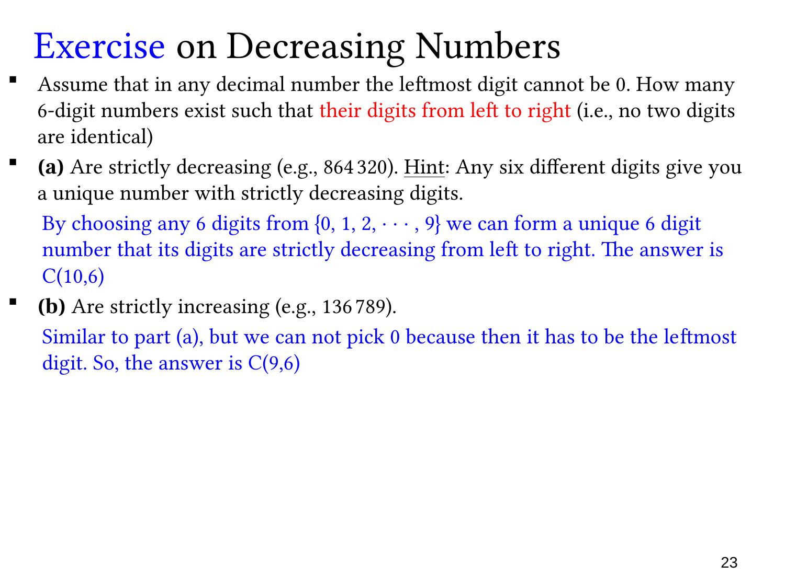

L1.6 · 第 23 页讲解原文
查看这一页课件

严格递增或递减的六位数
六位十进制数首位不能为 0，题目另要求数字从左到右严格单调，因此六个数字彼此不同。
严格递减：从 {0,1,…,9} 中任取六个不同数字，按从大到小排列，得到唯一的合法六位数。例如选 {0,2,3,4,6,8}，只能形成 864320。最大数字必然非零，即使选择了 0，也只会出现在末位。因此数量为
C(10,6)=210.
严格递增：数字同样一旦选定，次序就唯一确定，但不能选 0，否则 0 必然排在最左，无法成为六位数。因此只从 {1,…,9} 中选六个，数量为
C(9,6)=84.
虽然问题最终得到的是有序数字串，却用组合计数，因为单调条件已完全决定内部次序，不再有 6! 种自由排列。
两种情况的差异来自首位限制：0 在递减排列中合法，在递增排列中不合法。先考察限制如何影响可选数字，再决定是否需要排列。